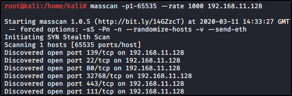

Scanning with Masscan
Masscan
https://github.com/robertdavidgraham/masscan
Nmap tool like, for scanning ports.
It is a tool that can scan even the whole Internet!
But.. just do not do that. That is dangerous, even legally.
Read the README to know more about this tool!

